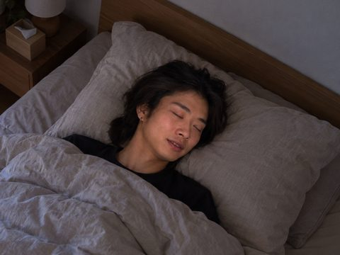
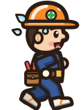
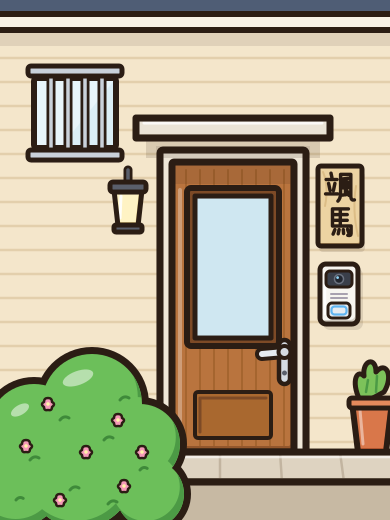
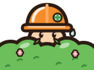
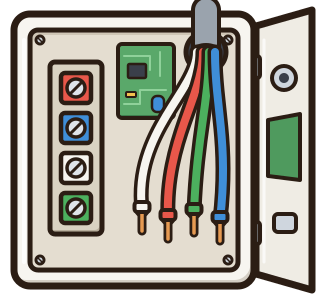
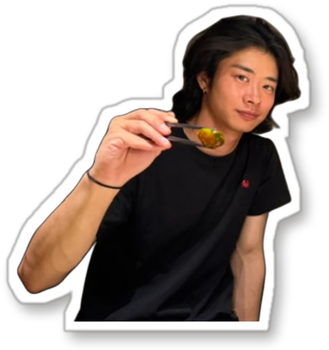

寝坊
颯馬
〜 颯馬さんを、起こしに行け 〜

● REC颯馬家 寝室06:58
Zzz
夜間工事明けの朝。
颯馬さんが現場に来ない。
- 1タップでジャンプして、颯馬さんの家まで走る
- 2壊れたインターホンを直す
（端子の色を覚えて、同じ色の線とつなぐ） - 3ドアの影を見て
お父さんなら隠れる／おばあちゃんなら待つ
持ち時間は90秒。ぶつかったり、まちがえると減ります。

颯馬家まで

タップでジャンプ！


集合まで90秒
● REC颯馬家 寝室06:58
Zzz

● REC颯馬家 寝室12:00
Zzz
けっか
あなたは
0秒のこし
0回ぶつかった
0本コーヒー
クレジット
- 企画・制作
- （制作会社名）
- 出演
- 颯馬さん、社長（株式会社 心電通）
- 写真
- 株式会社 心電通 ご提供・ブログより
- 音楽
- 魔王魂
- 効果音
- 効果音ラボ
- フォント
- Yuji Boku / Yusei Magic / Dela Gothic One / Zen Maru Gothic（SIL Open Font License）
このゲームはフィクションです。颯馬さんのご家族は架空の人物です。颯馬さんは実際には遅刻しません（たぶん）。